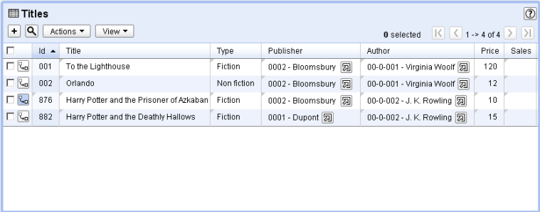
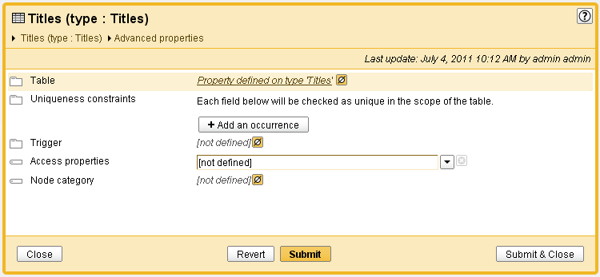
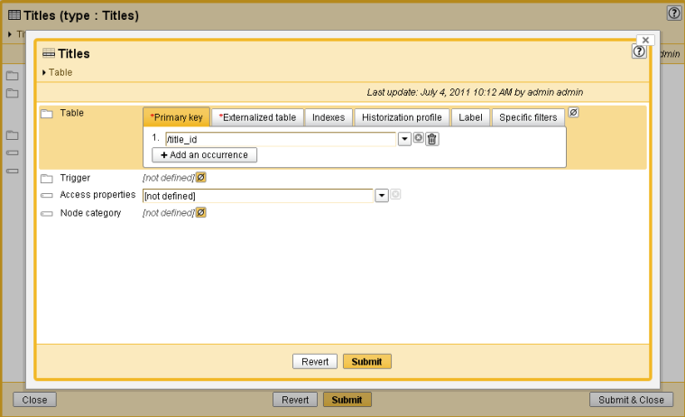
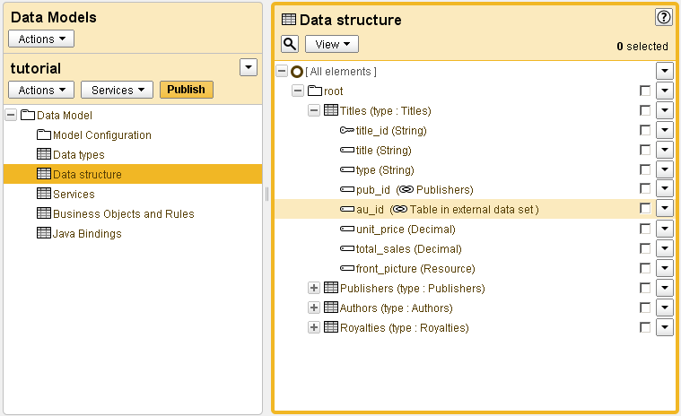

Release Date: July 12, 2011
We redesigned the way inherited and overwritten values are displayed to users in table view.
Previously, overwritten values were using bold style. From now on, overwritten values uses the default style and inherited values can be identified by a mark on the top left corner of the cell.
Direct access to properties defined for a reusable type has been added to the elements that are based on them. That is, if an element inherits properties from its type, it is possible to directly access these properties from within the type.
When accessible an element advanced properties, a link offers to display the reusable type advanced properties it is based on.
These properties are displayed inside a frame.
Previously, users had to access the detail form to know which table was targeted by a foreign key. From now on, this information is displayed in the hierarchy view, right next to the foreign key name.
Selection node definition has been enhanced. It is now possible to define a custom localized error message for cardinality constraints. See selection node documentation for more information.
Foreign key filters have been enhanced. It is now possible to define a custom localized error message for records that do not match a filter. See foreign key constraint documentation for more information.
Until now users could only select an integer field for ordering from the hierarchy target table. From now on, users can also select an integer field from the join table, used as dependency link, as an ordering field for a hierarchy dimension level.
Limitation: Ordering on large tables is not advised.
It is now possible to:
directly set a value under a terminal node using the method ValueContextForUpdate.setValue(Object, Path). See ValueContextForUpdate documentation for more information.
distinguish a "technical" version (that is, a snapshot) using the method AdaptationHome.isTechnicalVersion(). See AdaptationHome documentation for more information.
retrieve detailed information about inserted record for each table concerned by an import using the ImportResult interface. See ImportResult documentation for more information.
An exception is now thrown when importing a value that does not match the XML Schema declaration of an element. Previous behaviour was to set the internal value to null.
The specific log4J SMTP appender henceforth shares the global mail configuration in order to send mail. It allows to send mail using authentication and/or SSL mechanism.
Consequently, the property ebx.log4j.appender.kernelMail.SMTPHost is no more used.
[3212] The xs:unique facet does not support specific error messages.
Any standard facet should support the osd:defaultErrorMessage extension, as described in the documentation.
[3567] An exception occurs at schema compilation if osd:locale is used to define the default label for the table.
If a foreign key targets a table using osd:locale as default label, an exception occurs at schema compilation.
[3586] After migrating from v4 to v5, a warning message appears in kernel.log.
After migrating, the warning message "Module ebx-manager-1.0 not yet loaded: retry in 500 ms." appears repeatedly in the kernel.log.
[3592] The method ProcedureContext.doDelete does not work within a loop on a RequestResult.
If we have more than 2000 records to delete, it is not possible to do it in one shot in a loop running over a RequestResult using the method nextAdaptation().
[3601] EBX5 fails to start on an existing repository for HSQLDB and DB2.
EBX5 fails to start on an existing repository for HSQLDB and DB2.
[3624] An error occurs while getting the path of a data model node.
In a UIBeanEditor, the path obtained via the method Path.SELF is erroneous when the name of the current node contains a period character.
[3636] A schema defined with a URI such as "file:/" is always considered obsolete.
A schema defined with a URI such as "file:/" is always considered obsolete by the smart refresh process.
[3657] At schema compilation, a MalformedXPathException occurs using inter data set foreign keys.
If a foreign key with an XPath predicate is defined in a schema and if the target table of this foreign key is in another data set, an exception occurs at schema compilation.
[3460] It is not possible to create a filter on a foreign key using the data modeling tool.
If a foreign key constraint is defined on a field using the data modeling tool and this foreign key targets a table in another data set, it is not possible to define a filter for this foreign key.
[3559] Multi-valued attributes are not visible in the XPath building wizard.
The XPath wizard does not display multi-valued attributes, though they can be defined manually.
[3562] The criterion wizard does not work for computation rules.
In the data modeling tool, the 'Add' button of the criterion wizard does not work while defining a computation rule.
[3584] Erroneous report for constraints set on records selection.
When accessing the validation report in the user interface, it displays an erroneous part if it concerns a constraint that has set an error message on several records.
[3595] Ordering attributes in a hierarchy or in the data modeling tool does not work correctly.
In the data modeling tool or in a hierarchy, if a table has more than 10 attributes and pagination is activated, when moving a record which is not in the first page, it is always moved to the first page.
[3612] It should not be possible to set a trigger on a field: such a feature is not supported.
In the data modeling tool, it is possible to set a trigger on a field element, in the advanced properties, whereas it is not supported.
[3639] Data model tool does not support re-importing a data model.
Re-importing an existing schema generates validation errors while the first import doest not.
[3651] A validation error appears after creating a field of type 'Resource'.
After creating a field of type 'Resource', the following validation message appears: "OResource constraint properties are mandatory". However, the user does not know how to have a valid state
[3676] It is required to restart EBX when creating a data set based on a data model with errors.
It is required to restart EBX5 to create a data set through the user interface using a data model having errors.
[3699] In the data modeling tool, it is not possible to define a reusable type having the same name as a built-in type.
If we attempt to create a reusable type using the same name as a built-in simple type, the creation fails.
[3148] The generated HTML when accessing a hierarchy tree can be too large to be displayed by the browser.
For some recursive hierarchies, the pagination does not reduce drastically the display page. Consequently, the HTML page might be too large to be displayed.
[3613] A NullPointerException occurs while creating a node in a hierarchy.
A NullPointerException occurs while creating a node in a hierarchy based on a recursive multivalued dependency.
[3616] A ClassCastException occurs when ordering by a column inside a multi-occurrence complex node.
When the order criterion is inside a multi occurrence complex node, a ClassCastException occurs when displaying the hierarchy.
[3617] In a hierarchy, an error occurs if a node appears twice in a table's label.
While defining labels for a table, if a node is specified twice for a label, an exception occurs when trying to display or modify the hierarchy.
[3711] A NullPointerException occurs while building a hierarchy.
If an enumeration has been set on a table reference field,
a NullPointerException may occur.
[3726] Deleting a hierarchy node of a joined recursive dependency does not delete the corresponding joined record.
A validation error appears when one deletes a hierarchy node on a joined recursive dependency because the corresponding joined record is not deleted.
[3728] On a specific configuration, hierarchy nodes in a child data space may be those of the father data space.
On a multi-instance table reference dependency with a join table,
hierarchy nodes in a child data space are those of the father data space.
[3477] During a CSV export, a String field containing a carriage return is not quoted.
When exporting to CSV, a record is broken down into as many rows as the number of carriage returns its string values contain.
[3578] When importing data through XML or CSV services, the handleNewContext() method should not be called.
While importing data via CSV/XML services and if a trigger is defined on the table, the handleNewContext() method of a TableTrigger should not be called or should be called before the setting of imported data in the ValueContext.
[3720] The archive import service does not work for worklow models.
The import has no effect and a message indicates that the import was successful. No error or warning is logged.
[3610] The generated paths are erroneous when a node's name contains the character '.'.
When the name of a data model node contains a '.' character, the Java generated paths are erroneous.
[3505] A NumberFormatException occurs while working with a UIBean on a foreign key element.
A NumberFormatException occurs while deploying the UIListSearch component on a terminal node with a UIBean and a tableRef facet.
[3545] "Select all /none" links have no effect.
The method UIResponseContext.addUIDropDownBoxMultiple() generates a component with "select all / none" links. These links do not work.
[3557] In the advanced search UI component, the search result is erroneous when working with UILabelRenderer.
In the user interface, for a foreign key targeting a table with a dynamic default label (UILabelrenderer), the advanced search UI component uses the code instead of the label of the target table.
[3570] A merge procedure fails if a primary key field contains a bracket character.
The error occurs while consulting the table, which contains the special character in the primary key, from the merge report.
[3580] Users can not access their details in EBX5.
Users can no longer access their account details in EBX5. Hence, they are not able to modify their password, email address, etc.
[3588] In a record form, inheritance activation at data model level is not checked.
Even if inheritance is disabled at data model level, the 'actions' menu offers the possibility to overwrite/inherit.
[3609] In a table, the preview button for osd:html field does not display the correct record.
The preview button for osd:html field always displays the content of the first record of the table.
[3635] A white page appears while accessing the table view.
When the label of a table field contains the double quote character, the table view is unaccessible and a white page is displayed instead.
[3645] Dates display can be inaccurate in languages other than 'en_US'.
When defining the formatting policy for a module in order to display localized text, dates display is wrong in languages other than 'en_US'.
[3664] Using IE8, hidden fields in data set permissions are not working correctly.
When adding more hidden fields in the data set permissions' table, we get only one hidden instead of three hidden fields.
[3666] The minimum screen resolution is not supported.
The workflow and data modeling tool do not support the minimum screen resolution of 1024x768.
[3675] Unable to create a data set when the validation screen is displayed.
The "Create a data set" action is offered when displaying the validation report of a data set, but clicking on the action creates an "Invalid request" error.
[3703] In the advanced search component, the research is case sensitive.
In the advanced search component, the research is case sensitive whereas it should be case insensitive.
[3722] An exception occurs while accessing the data space view.
If a data space has been locked by a user who is no longer referenced in the directory, an exception occurs while accessing the data space view.
[3648] While defining a permission rule, the 'Restriction policy' field can be set to null although it is mandatory.
When creating a new record in the permission table of a data set, although the 'Restriction policy' field is mandatory, it can be set to null by clicking on the 'Empty field' icon.
[3461] : While creating a criterion for an osd:email field, a validation error appears.
While creating a custom view, if a criterion is applied on a osd:email field, the "value" has to be filled with a valid email address. It is problematic if the criterion is "begins with" or "ends with".
[3577] An exception occurs at schema compilation while defining dynamic facets on a calculated field.
If a calculated field (ValueFunction) is holding a dynamic facet, an exception occurs at schema compilation.
[3732] A validation event overflow during a mass update does not impact inter-data set dependencies.
If too much validation events occurs during a mass update, the validation state of the current data set is set to overflow but its dependent data sets are not.
In that case the validation report of the dependent data sets must be manually reset.
[3555] The re-allocation and de-allocation buttons are proposed even if the work item has been directly allocated to a user.
When a work item is directly allocated to a user, programmatically or in the workflow model, the re-allocation and de-allocation mechanisms should not be proposed.
[3656]UserTaskCreationContext.getOfferedToNotificationMail() always returns null.
When a user task is defined as a Java class, if there is no profile defined in the service definition, the method UserTaskCreationContext.getOfferedToNotificationMail() always returns null, even if a template is set in the mail notification definition.
[3738]StackOverflowError in the graphical workflow history.
In the graphical workflow history, an infinite loop can occur if a condition references another one. This infinite loop induces a StackOverflowError in the logs and the following message is displayed to users: "Owing to inconsistencies in the data structure, the graphical workflow could not be loaded.".